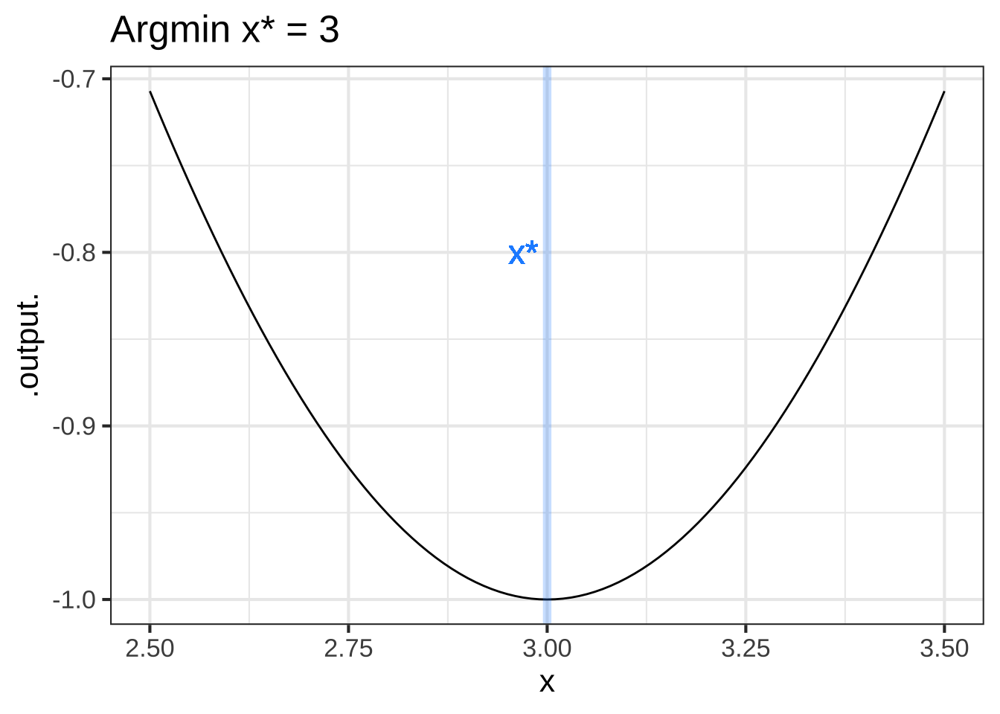
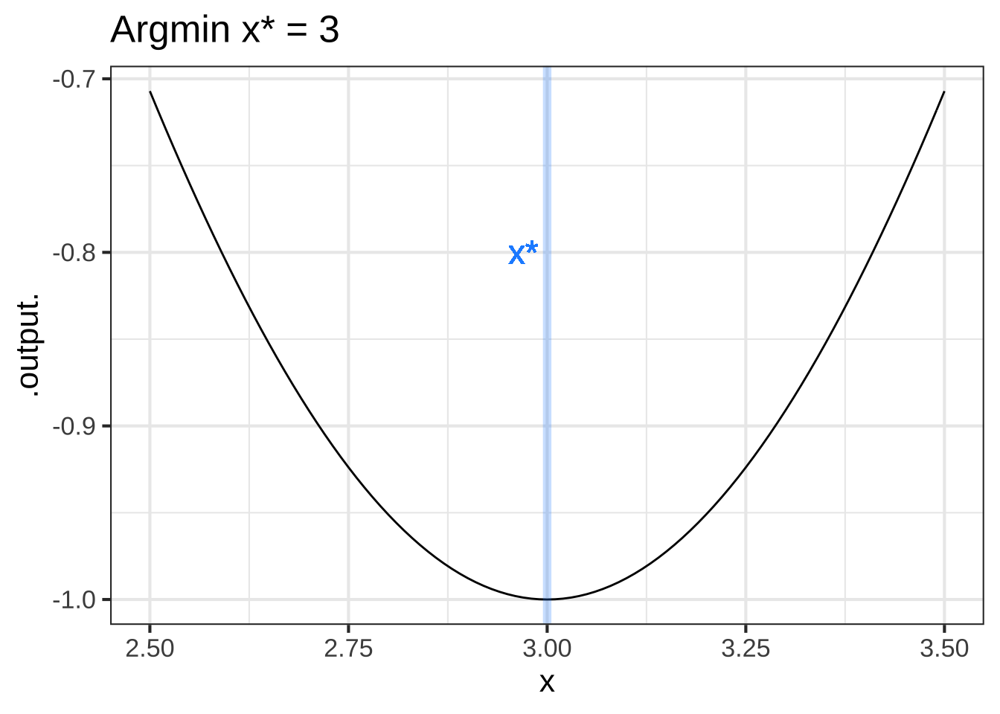
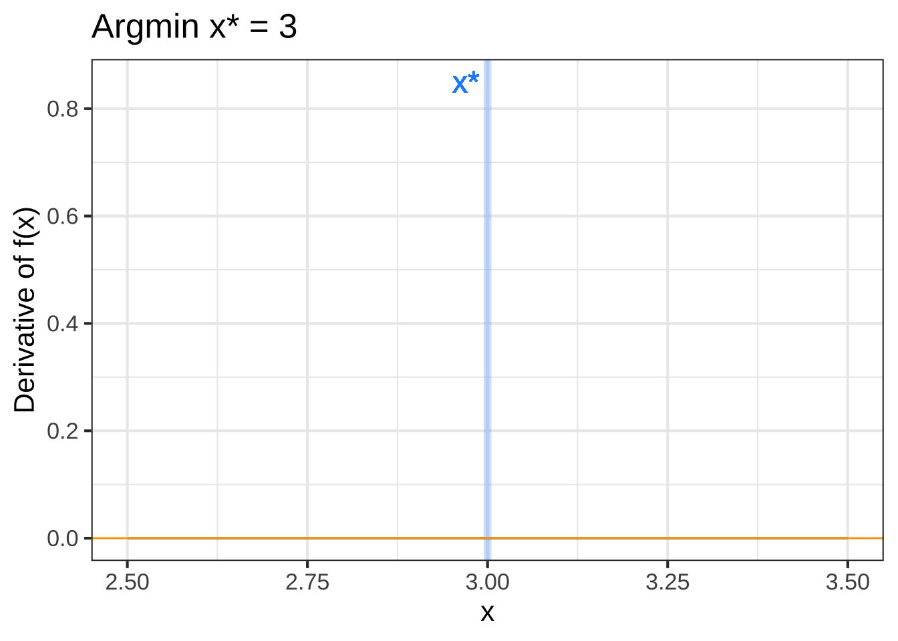
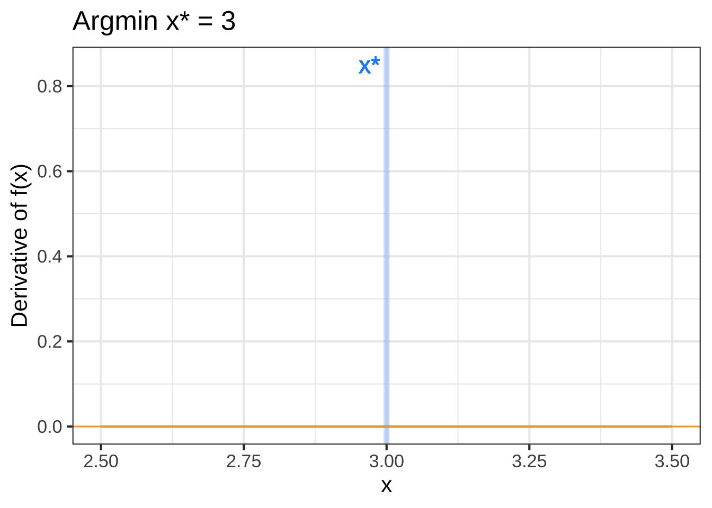

Chapter 16 Optimization
To “optimize” means to make something as good as possible with the available resources. Optimization problems are common in science, logistics, industry, and any other area where one seeks the best solution to a problem. Some everyday examples:
- How much salt to add to a stew. Stews can be too salty, or they can be not salty enough. Somewhere in the middle is the optimum.
- When to harvest trees being grown for lumber. Harvest too soon and you might be losing out on the prime growing years. Wait too long and trees will have settled in to slow growth, if any.
- Walking up too steep a slope is tiring and slows you down; that’s why hiking trails have switchbacks. When the switchbacks are too shallow, it takes a long time to cover the distance. What’s the most efficient angle to enable hikers to get up the hill in the shortest time.
16.1 Structure of the problem
In an optimization problem, there is one or more input quantity whose value you have to choose. The amount of salt; the years to wait from planting to harvesting a tree; the angle of the trail with respect to the slope. We’ll call this the decision quantity.
Similarly, there is one or more output quantity that you value and want to make as good as possible. The taste of the stew; the income produced by selling the lumber; the time it takes to walk up the hill. The output quantity is called the objective.
The model that relates to inputs to the objective output is called the objective function. Solving an optimization problem—once the modeling phase is complete—amounts to finding a value for the decision quantity (the input to the objective function) that produces the best level of the objective (the output from the objective function).
Sometimes the objective is something that you want to minimize, make as small as possible. In the hiking trail problem, we seek to minimize the amount of time it takes to walk up the trail. Sometimes you want to maximize the objective, as in the wood-harvest problem where the objective is to harvest the most wood per year.
Mathematically, maximization and minimization are the same thing. Every minimization problem can be turned into a maximization problem by putting a negative sign in front of the objective function. To simplify the discussion, in talking about finding the solution to an optimization problem we’ll imagine that the goal is to maximize. But keep in mind that many circumstances in the real world, “best” can mean to minimization.
The solution you seek in a maximization problem is called the argmax. This is a contraction of two words: the argument (that is, input) that produces the maximum output. (For minimization, the solution is the ***argmin.)
Once you have found the argmax you can plug that value into the objective function to find the value of the output. That value is the maximum.
People often talk about “finding the maximum.” This is misleading. The setup for an optimization problem is:
- Construct (that is, model) the objective function.
- Now that you know the objective function, find the input to that function—that is, the argmax—that produces the maximum output.
To illustrate the setup of an optimization problem, imagine yourself in the situation of a contest to see who can shoot a tennis ball the farthest into a field with a slingshot. During the contest, you will adjust the vertical angle of launch, place the ball into the slingshot’s cradle, pull back as far as possible, and let go. To win the contest, you need to optimize how you launch the ball.
The objective is the distance travelled by the ball. For simplicity, we’ll imagine that the velocity of the ball at release is fixed at \(v_0\). You’ll win or lose based on the angle of launch you choose.
Before you head out into the field to experiment, let’s do a bit of preparation. We’ll model how far the ball will travel (horizontally) as a function of the angle of launch \(\theta\) and the initial velocity \(v_0\).
The mathematics of such problems involves an area called differential equations, an important part of calculus which we’ll come to later in the course. Since you don’t have the tools yet, we’ll just state a simple model of how long the ball stays in the air. \[\text{duration}(v_0, \theta) = 2 v_0 \sin(\theta)/g\] \(g\) is the acceleration due to gravity, which is about \(9.8 \text{m}\text{s}^{-2}\), assuming that the contest is being held on Earth.
The horizontal distance travelled by the tennis ball will be \[\text{hdist}(v_0, \theta) = \cos(\theta) v_0\, \text{duration}(v_0, \theta) = 2 v_0^2 \cos(\theta)\sin(\theta) / g\] Our objective function is hdist(), and we seek to find the argmax. The input \(v_0\) is (we have assumed) fixed, so the decision quantity is the angle \(\theta\).
The best choice of \(\theta\) will make the quantity \(\cos(\theta)\sin(\theta)\) as large as possible. So in finding the argmax, we don’t need to be concerned with \(v_0\) or \(g\).
Finding the argmax can be accomplished simply by plotting the function \(\cos(\theta)\sin(\theta)\). We’ll implement the function so that the input is in units of degrees.
f <- makeFun(cos(pi*theta/180)*sin(pi*theta/180) ~ theta)
slice_plot(f(theta) ~ theta, domain(theta=c(0,90)))
slice_plot(f(theta) ~ theta, domain(theta = c(40, 50)))

Figure 16.1: The distance travelled by a ball launched at an angle of \(\theta\)$, according to the simple model is duration of flight and distance travelled.
From the graph, especially the zoomed-in version, you can read off the argmax as \(\theta = 45^\circ\).
Finding the argmax solves the problem. You may also want to present your solution by saying what the value of the output of hdist() is when the argmax is given as input. You can read off the graph that the maximum of \(\cos(\theta)\sin(\theta)\) is 0.5 at \(\theta = 45^\circ\), so overall the distance will be \(v_0^2 / g\) :::
Review Exercise: What is the dimension of \(v_0^2 / g\)?
16.2 Interpreting the argmax
The graphical solution given to the slingshot problem is entirely satisfactory. Whether that solution will win the contest depends of course on whether the model we built for the objective function is correct. There are potentially important things we have left out, such as air resistence.
Solving the optimization problem has prepared us to go out in the field and test the result. Perhaps we’ll find that the real-world optimum angle is somewhat steeper or shallower than \(\theta = 45^\circ\).
Besides the argmax, another important quantity to read from the graph in Figure 16.1 is the precision of the argmax. In strict mathematical terms, the argmax is exactly 45 degrees. But in practical terms, it may not matter so much to the outcome if we are a little away from \(45^\circ\). For example, according to the model, any angle in the range \(40^\circ < \theta < 50^\circ\) would produce an output that is within 1% of the distance reached at the argmax.
Contests are won or lost by margins of less than 1%, so you should not casually deviate from the argmax. On the other hand, \(45^\circ\) is the argmax of the model. Reality may deviate from the model. For instance, suppose that air resistance or wind might might have an effect of about 1% on the distance. You can expect that such factors might change the optimal angle by as much or more than \(\pm 5^\circ\).
16.3 Derivative and optimization
We’re now going to reframe the search for the argmax and it’s interpretation in terms of derivatives of the objective function with respect to the decision quantity (\(\theta\) in the slingshot problem). For a function of one variable, this will not be an improvement from the look-at-the-graph technique to find the argmax. A genuine reason to use derivatives is to set us up in the future to solve problems with more than one variable, where it is hard to draw or interpret a graph. Also, describing functions in the language of derivatives can help us think more clearly about aspects of the problem, such as the precision of the argmax.
With a graph such as Figure 16.1, it’s easy to find the argmax; common sense carries the day. So it won’t be obvious at first why we are going to take the following approach:
Let’s denote an argmax of the objective function \(f(x)\) by \(x^\star\). Let’s look at the derivative \(\partial_x f(x)\) in the neighborhood of \(x^\star\). Referring to Figure 16.1, where \(x^\star = 45^\circ\), you may be able to see that \(\partial_x f(x^\star)\) is zero; the line tangent to the function’s graph at \(x^\star\) is flat.
Seen another way, the slope of \(f(x)\) to the left of \(x^\star\) is positive; moving a tiny bit to the right (that is, increasing \(x\) by a very small amount, leads to an increase in the output \(f(x)\). Intuitively, as you approach the peak of a hill, you are walking uphill.) Just to the right of \(x^\star\), the slope of \(f(x)\) is negative; as you reach the top of a hill and continue on, you will be going downhill. So the derivative function is positive on one side of \(x^\star\) and negative on the other, suggesting that it crosses zero at the argmax.
Inputs \(x^\star\) such that \(\partial_x f(x^\star) = 0\) are called critical points. Why not call them simply argmaxes? Because a the slope will also be zero at an argmin. And it’s even possible to have the slope be zero at a point that’s neither an argmin or an argmax.
Question tmp-53: Consider the function \(f(x) \equiv x^3\). Confirm that the value of the derivative \(\partial_x f(x = 0)\) and so \(x^\star = 0\) is a critical point. Which sort of critical point is \(x^\star=0\)? (Hint: Draw the graph of \(f(x)\) near \(x=0\) to see what’s going on.)
An argmax [But \(f(0) < f(x > 0)\), so \(x^\star=0\) can’t be an argmax.]
An argmin [But \(f(x < 0) < f(0)\), so \(x^\star=0\) can’t be an argmin.]
Neither (+) []
At this point, we know that values \(x^\star\) that give \(\partial_x f(x^\star) = 0\) are “critical points,” but we haven’t said how to figure out whether a given critical point is an argmax, an argmin, or neither. This is where the behavior of \(\partial_x f(x)\) near x=x^$ is important. If \(x^\star\) is an argmax, then \(\partial_x f(x)\) will be positive to the left of \(x^\star\) and negative to the right of \(x^\star\); walk up the hill to get to \(x^\star\), at the top the hill is flat, and just past the top the hill has a negative slope.
For an argmin, changing \(x\) from less than \(x^\star\) to greater than \(x\star\); you will be walking down into the valley, then level at the very bottom \(x=x^\star\), then back up the other side of the valley after you pass \(x=x^\star\). Figure 16.2 shows the situation.
## Warning: geom_vline(): Ignoring `mapping` because `xintercept` was provided.
## Warning: geom_vline(): Ignoring `mapping` because `xintercept` was provided.
## Warning: geom_vline(): Ignoring `mapping` because `xintercept` was provided.
## Warning: geom_vline(): Ignoring `mapping` because `xintercept` was provided. 
 

Figure 16.2: Top row: An objective function near an argmax (left) and an argmin (right). Bottom row: The derivative of the objective function
The bottom row of graphs in Figure 16.2 shows the derivative of the objective function \(f(x)\), that is, \(\partial_x f(x)\). You can see that for the argmax of \(f(x)\), the derivative \(\partial_x f(x)\) is positive to the left and negative to the right. Similarly, near the argmin of \(f(x)\), the derivative \(\partial_x f(x)\) is negative to the left and positive to the right.
Stated another way, the derivative \(\partial_x f(x)\) has a positive slope near an argmin and a negative slope near an argmax.
Just as we differentiate \(f(x)\) to find it’s slope, so to find the slope of the function \(\partial_x f(x)\) we can differentiate it. The result is called the second derivative. We could write it \(\partial_x \left[\partial_x f(x)\right]\), but for brevity we write it \(\partial_{xx} f(x)\).
The second derivative of the objective function \(f(x)\) at a critical point \(x^\star\) is what tells us whether the critical point is an argmax, an argmin, or neither.
| Critical point \(x^\star\) | \(\partial_x f(x^\star)\) | \(\partial_{xx} f(x^\star)\) |
|---|---|---|
| argmax | 0 | negative |
| argmin | 0 | positive |
| neither | 0 | 0 |
Question tmp-54: Returning to the function \(f(x) \equiv x^3\), find the value of the second-derivative \(\partial_{xx} f(x^\star)\) evaluated at the critical point \(x = x^\star = 0\). Which of these is \(\partial_{xx} f( x=0\)?
Negative [But you established in the previous exercise that the critical point \(x^\star=0\) is neither an argmin nor wan argmax.]
Positive [But you established in the previous exercise that the critical point \(x^\star=0\) is neither an argmin nor wan argmax.]
Zero (+) []
When we differentiate a function \(f(x)\), we produce a new function that we can call anything we like. To help readers follow the thread of the story, it’s nice to name the new function \(\partial_x f(x)\). That signals clearly to the reader the origins of the new function with respect to the original function \(f(x)\).
In words, \(\partial_x f(x)\) is often called the derivative of \(f(x)\) (with respect to x). To “derive” is a very general term and could mean just about any way of creating something new from something old. In calculus, “derivative” always means “created by differentiation.” Perhaps it would have been better if history had led us to call \(\partial_x f(x)\) by the name “differentiated \(f(x)\)” or “the differential function of \(f(x)\).”
Graphically, we can read the second derivative \(\partial_{xx} f(x)\) as the slope of the first derivative \(\partial_x f(x)\) or as the concavity of the function \(f(x)\) itself. When \(\partial_{xx} f(x) < 0\), then \(f(x)\) is concave down (a frown). Likewise, when \(\partial_{xx} f(x) >0\) the \(f(x)\) is concave up (a smile). When \(\partial_{xx} f(x) = 0\), then \(f(x)\) has no curvature.
To this point, we’ve translated features of functions that are evident on a graph into the language of derivatives:
- The slope of a function \(f(x)\) at any input \(x\) is the value of the derivative function \(\partial_x f(x)\) at that same \(x\).
- The concavity of a function \(f(x)\) at any input is the slope of the derivative function, that is, \(\partial_x f(x)\).
- Putting (i) and (ii) together, we get that the concavity of a function \(f(x)\) at any input \(x\) is the value of the second derivative function, that is, \(\partial_{xx} f(x)\).
- At an argmax \(x^\star\) of \(f(x)\), the value of the derivative function \(\partial_x f(x^\star)\) is zero and the value of the second derivative function \(\partial_{xx} f(x^\star)\) is negative. (The situation at an argmin is similar, the derivative of the objective function is zero and the second derivative is positive.)
What’s the critical point?
You’re familiar with the quadratic polynomial: \[g(x) = a_0 + a_1 x + a_2 x^2\] The graph of a quadratic polynomial is a parabola, which might be concave up or concave down. As you know, a parabola has only one critical point, which might be an argmin or an argmax.
Let’s find the critical point. We know that the critical point is \(x^\star\) such that \(\partial_x g(x_0) = 0\). Since we know how to differentiate a power law, we can see that \[\partial_x g(x) = a_1 + 2 a_2 x\] and, more specifically, at the critical point \(x^\star\) the derivative will be \[a_1 + 2 a_2 x^\star = 0\] The above is an equation, not a definition. It says that whatever \(x^\star\) happens to be, the quantity \(a_1 + 2 a_2 x^\star\) must be zero. Using plain old algebra, we can find the location of the critical point \[x^\star = -\frac{a_1}{2 a_2}\]
Exercises involving computing derivatives
16.4 Approximations around \(x^\star\)
Starting with just the naked modeling functions (e.g. \(e^t\)), you have a small but rich set of mathematical operations that enables you to make a huge variety of functions to suit a big range of modeling needs:
- input scaling, which turns the naked modeling functions into the more directly useful basic modeling functions.
- linear combinations of functions, e.g. \(A + B e^{-kt}\)
- compositions of functions, e.g. \(e^{-kt^2}\) which you can recognize as the composition of an exponential with a power-law function.
- products of functions, e.g., \(\sin\left(\frac{2\pi}{P}x\right) e^{-kt}\)
Now we want to tame this profusion of possibilities and consider a way to construct stand-ins for any function, using a universal format that needs a minimum of information and can be used for many purposes in place of the original function. It’s helpful to have a name for the stand-ins that reminds us of whom they are stand-ins for. If the original function is \(f(x)\), we’ll write the names of the stand-ins with a tilde, as in \(\widetilde{\,f\ }(x)\).
The stand-in functions are intended to be much simpler than the original but useable as a substitute for the original. The catch is that the stand-in is warranteed to be a good substitute only within a small neighborhood of the domain of the origin.
The information we need to construct the stand-ins is very limited. First, we need to specify where the warranteed neighborhood is. We’ll tend to use \(x_0\) as identifying the center of that neighborhood. We’ll also need \(f(x_0)\), the output of the original function when the input is \(x_0\), and \(\partial_x f(x_0)\) and \(\partial_{xx} f(x_0)\).
::: {.takenote}
This is a good time to remind you of the notation conventions that we are using to write about functions and evaluating functions.
A function with all its individual characteristics and idiosyncracies is written \(f(x)\): the function name and the name of the input or inputs. The name of this function is \(f()\). The name of the input to \(f()\) is \(x\), or whatever is the input name that was given in the parentheses following the name.
Every function has a derivative function. We could call that derivative function anything we like, but it’s sensible to give it a name that states explicitly where it comes from. We’re using \(\partial_x f(x)\) for this purpose. Similarly, the name we use for the second derivative is \(\partial_{xx} f(x)\).
Evaluating a function means to specify a particular value for the input. We use several ways of making it clear when we are talking about a particular value of the input, e.g. \[\mbox{function output:}\ \ \ f(x = 3)\ \ \ \text{or}\ \ f(3)\ \ \ \text{or}\ \ \left.f(x)\strut\right|_{x=3}\] The output of such an evaluated function is a quantity.
Sometimes we want to refer to the output for some particular input, but we don’t have that specific quantity pinned down yet. Our preferred style for writing this is to use a name that is similar to an input name, but which has a subscript as in \(x_0\), \(x_1\), \(x_i\), \(x_\star\) or, occasionally, a superscript as in \(x^\star\). The output of the function is then written like this: \[\mbox{function output:}\ \ \ f(x = x_0)\ \ \ \text{or}\ \ f(x_0)\ \ \ \text{or}\ \ \left.f(x)\strut\right|_{x=x_0}\] This same style applies when the function has a name like \(\partial_x f()\) or \(\partial_{xx} f()\), for instance
\[\mbox{function output:}\ \ \ \partial_x f(x = x_0)\ \ \ \text{or}\ \ \partial_x f(x_0)\ \ \ \text{or}\ \ \left.\partial_x f(x)\strut\right|_{x=x_0}\] :::
Here are two universal formats that can be used to construct a stand-in for any function near a particular input \(x_0\). Since it’s useful to have a name for the stand-in, we’ll use a tilde on top of the original function name:
- First-order approximation: \(\widetilde{f_1}(x) \equiv f(x_0) + \partial_x f(x_0) (x-x_0)\)
- Second-order approximation: \(\widetilde{f_2}(x) \equiv f(x_0) + \partial_x f(x_0) [x-x_0] + \frac{1}{2} \partial_{xx} f(x_0) [x - x_0]^2\)
Notice that the first two terms of \(\widetilde{f_2}(x)\) are identical to \(\widetilde{f_1}(x)\), so we could write the second-order approximation as \[\widetilde{f_2}(x) \equiv \widetilde{f_1}(x) +\frac{1}{2} \partial_{xx} f(x_0) [x-x_0]^2\]
The first-order approximation \(\widetilde{f_1}(x)\) is nothing more than the straight-line function whose graph is tangent to the graph of \(f(x)\) at the input \(x=x_0\).
The second-order approximation is a quadratic polynomial. Being quadratic, its graph is the familiar parabola. The graph of \(\widetilde{f_2}(x)\) is the parabola that is tangent to the graph of \(f(x)\).
Consider the function \(g(x)\) whose graph is shown in Figure ??.
## Warning: geom_vline(): Ignoring `mapping` because `xintercept` was provided.
## Warning: geom_vline(): Ignoring `mapping` because `xintercept` was provided. We haven’t given you a formula for \(g(x)\), but you can see that it isn’t any of the basic modeling functions but something more complicated. We’re going to construct a first-order and second-order approximation to \(g(x)\) in a neighborhood \(x_0 = -1\) as marked by the blue shaded area.
We haven’t given you a formula for \(g(x)\), but you can see that it isn’t any of the basic modeling functions but something more complicated. We’re going to construct a first-order and second-order approximation to \(g(x)\) in a neighborhood \(x_0 = -1\) as marked by the blue shaded area.
Note that \(x_0\) is not an argmin of \(g(x)\). You can see that the argmin is a little to the right of \(x_0\).
The “facts” about \(g(x)\) that are needed to construct the approximations, beyond the specification of the location of the neighborhood \(x_0\), are the values \(g(x_0)\), \(\partial_x g(x_0)\), and \(\partial_{xx} g(x_0)\). These are:
x0 <- -1
g(x0)## [1] -23.992dx_g <- D(g(x) ~ x)
dxx_g <- D(g(x) ~ x + x)
dx_g(x0)## [1] -2.3493dxx_g(x0)## [1] 7.8077With these facts, we can construct the first- and second-order approximations:
tilde1_g <- makeFun(-23.992 - 2.3493*(x-x0) ~ x)
tilde2_g <- makeFun(tilde1_g(x) + (7.8077/2) * (x-x0)^2 ~ x)Figure 16.3 shows \(\widetilde{g_1}(x)\) and \(\widetilde{g_2}(x)\), zooming in around \(x_0 = -1\).
## Warning: geom_vline(): Ignoring `mapping` because `xintercept` was provided.
## Warning: geom_vline(): Ignoring `mapping` because `xintercept` was provided.
Figure 16.3: The first-order (green) and second-order (red) approximations to \(g(x)\) near \(x_0=-1\).
You can see that \(\widetilde{g_2}(x)\) is a good approximation to \(g(x)\). In particular, the argmin of \(\widetilde{g_2}(x)\) is close to the that of \(g(x)\).
In a previous example, we showed that the argmin of the parabolic function \(a_0 + a_1 x + a_2 x^2\) is \(x^\star = -\frac{a_1}{2 a_2}\). Using that formula, the argmin of \(\widetilde{g_2}(x)\) is -2.3493/(7.8077/2) = -0.602.
16.5 Solving computationally
How to find the zeros of the derivative of a function and how to evaluate the second derivative at those zeros to find out what kind of critical point it is.
The cubic bifurcation. Start with a cubic with an argmax followed by an argmin. Then move the parameter to see the two critical points coalesce into a single point then disappear.
Or, maybe, “the problem with polynomials.” Linear function always has 1 root and no critical points. Quadratic function always has one critical point (and subject to a constant may have two roots generically). But a cubic might have 1 or 3 solutions and the behavior depends on the constant. It might have one or three critical points.
In the previous discussion, we used phrases such as “every function has a derivative,” or that “any function can be approximated” by a second-order polynomial. For most practical purposes, this is true. In the next chapter, however, we’ll set mathematical conditions on “every” and “any” that will let us see when there can be an exception.
Move this earthquake example to a point where you can do parametric plots.
16.6 Use case: Risk of earthquakes
For software designers, a use case is a description of how a person will use the software to accomplish a particular goal. It’s fair to wonder what are the use cases of differentiation. It’s early days in your study of calculus, so some of the use cases are beyond your reach. But knowing about first and second derivatives, argmaxes and maximums, curvature, and linear and quadratic approximations gives you access to one of the most important general patterns in scientific work: the measurement of precision.
As you know, precision refers to how well you know a quantity and is often expressed using the plus-or-minus notation. To illustrate, consider the earthquake risk situation in the Cascadia Subduction Zone that includes western Oregon and Washington states. The last devastating earthquake was on January 26, 1700, a date approximated by local oral tradition and derived from written tsunami records across the Pacific Ocean in Japan.
Geologic features allow approximate dating of previous large earthquakes in the region, specifically one about 700 years previous to the latest and on about 2000 years before that.
Your task as a modeler is to estimate the probability of another high-magnitude earthquake occuring in the next 100 years.
A standard model for the time interval between consecutive earthquakes is \(p(y) \equiv k e^{-ky}\), where \(p(t)\) is the probability of an earthquake happening exactly \(y\) years after the last. We can use data on previous earthquakes to find an approximate value for \(k\). Once we know \(k\), we can calculate the probability that the next earthquake will occur between 2025 and 2125 as \(e^{-325 k} - e^{-425 k}\) where 325 is the time interval from 1700 to 2025 and 426 is the interval between 1700 and 2125. (You’ll see where the formula comes from in Block 3.)
We have information on two complete earthquake cycles, one lasting 2000 years and the other 700. A standard way to estimate the parameter \(k\) is called “maximum likelihood.” This amounts to assuming a value for \(k\) and then, with that value, calculating the likelihood of having seen inter-quake intervals of 2000 and of 700 years. This likelihood is \[p(2000) \times p(700) = k^2 e^{-k (2000 + 700)}\] A graph of the likelihood as a function of \(k\), using a log vertical scale gives:
slice_plot(log(k^2 * exp(-k*2700)) ~ k, domain(k=c(0.0001, 0.003)), npts=500) Making a parametric plot
Making a parametric plot
Quakes <- tibble::tibble(
k = seq(0.0001, 0.0025, length=1000),
LL = log(k^2 * exp(-k*2700)),
prob = exp(-325*k) - exp(-425*k)
)
gf_point(LL ~ k, data=Quakes)
gf_point(LL ~ prob, data = Quakes)
gf_point(prob ~ k, data = Quakes)